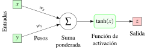

19 2025-12-18
Examen de Análisis III
Ejercicio 19.1 La variación del precio de una acción viene dada por la función
\[ f(x,y)=\dfrac{ax^3}{3} + ay^3-4ax-12ay, \]
donde \(x\) e \(y\) son dos variables macroeconómicas y \(a>0\) es una constante.
¿En qué punto la variación del precio alcanza un máximo local? ¿Y en qué punto alcanza un mínimo local?
¿Cuánto debe valer \(a\) para que en el punto \((2,1)\) la máxima tasa de variación instantánea de \(f\) sea \(9\)?
Tomando el valor de \(a\) encontrado en el apartado anterior, ¿cómo varía la función \(f\) en el punto \((2,1)\) si \(x\) aumenta a razón de \(0.1\) e \(y\) disminuye a razón de \(0.2\)?
Calculamos las derivadas parciales e igualamos a cero para encontrar los puntos críticos.
\[\begin{align*} \frac{\partial f}{\partial x}(x,y) &= ax^2 - 4a = a(x^2 - 4) = 0 \\ \frac{\partial f}{\partial y}(x,y) &= 3ay^2 - 12a = 3a(y^2 - 4) = 0 \end{align*}\]
De la primera ecuación obtenemos \(x = \pm 2\) y de la segunda \(y = \pm 2\). Por tanto, los puntos críticos son \((2,2)\), \((2,-2)\), \((-2,2)\) y \((-2,-2)\).
Calculamos la matriz Hessiana para clasificar los puntos críticos.
\[ \nabla^2f(x,y) = \begin{pmatrix} \frac{\partial^2 f}{\partial x^2} & \frac{\partial^2 f}{\partial x \partial y} \\[6pt] \frac{\partial^2 f}{\partial y \partial x} & \frac{\partial^2 f}{\partial y^2} \end{pmatrix} = \begin{pmatrix} 2ax & 0 \\ 0 & 6ay \end{pmatrix}. \]
y su determinante es \(H(x,y) = 12a^2xy\).
Evaluamos el Hessiano en cada punto crítico.
\[\begin{align*} H(2,2) &= 48a^2 > 0 \quad \text{y} \quad \frac{\partial^2 f}{\partial x^2}(2,2) = 4a > 0 \Rightarrow \text{mínimo local en } (2,2) \\ H(2,-2) &= -48a^2 < 0 \Rightarrow \text{punto de silla en } (2,-2) \\ H(-2,2) &= -48a^2 < 0 \Rightarrow \text{punto de silla en } (-2,2) \\ H(-2,-2) &= 48a^2 > 0 \quad \text{y} \quad \frac{\partial^2 f}{\partial x^2}(-2,-2) = -4a < 0 \Rightarrow \text{máximo local en } (-2,-2) \end{align*}\] Por tanto, el máximo local se alcanza en \((-2,-2)\) y el mínimo local en \((2,2)\).
La máxima tasa de variación instantánea de \(f\) en un punto viene dada por el módulo del gradiente en ese punto.
\[\begin{align*} \nabla f(x,y) &= \left( \frac{\partial f}{\partial x}(x,y), \frac{\partial f}{\partial y}(x,y) \right) \\ &= \left( a(x^2 - 4), 3a(y^2 - 4) \right) \end{align*}\]
Evaluamos el gradiente en el punto \((2,1)\).
\[ \nabla f(2,1) = \left( a(4 - 4), 3a(1 - 4) \right) = (0, -9a). \]
El módulo del gradiente es
\[ |\nabla f(2,1)| = \sqrt{0^2 + (-9a)^2} = 9a. \]
Igualando a \(9\) obtenemos \(9a = 9 \Rightarrow a = 1\).
La variación de la función \(f\) en el punto \((2,1)\) cuando \(x\) aumenta a razón de \(0.1\) e \(y\) disminuye a razón de \(0.2\) viene dada por la derivada direccional de \(f\) en ese punto en la dirección del vector \(\mathbf{v} = (0.1, -0.2)\), que vale
\[\begin{align*} f'_\mathbf{v}(2,1) &= \nabla f(2,1) \cdot \frac{\mathbf{u}}{|\mathbf{u}|} \\ &= (0, -9) \cdot \frac{(0.1, -0.2)}{\sqrt{0.1^2 + (-0.2)^2}}\\ &= (0, -9) \cdot \frac{(0.1, -0.2)}{\sqrt{0.05}} \\ &= \frac{1.8}{\sqrt{0.05}} \approx 8.049. \end{align*}\]
Es decir, por cada unidad que nos movamos en la dirección del vector \(\mathbf{v}\), la variación del precio aumenta aproximadamente \(8.049\) unidades.
Ejercicio 19.2 Dado el perceptrón de la imagen, ¿en qué dirección deben cambiarse los pesos para que el error cuadrático decrezca lo más rápidamente posible?

Si se inicializa la red con pesos \(w_x = w_y = 0.5\) y suponiendo que para la entrada \((1,2)\) la salida debería ser \(0\), actualizar los pesos tomando una tasa de aprendizaje de \(0.1\).
La función que define el perceptrón es \(\hat z = f(w_x, w_y) = \tanh(w_x x + w_y y)\) conde \(x\) e \(y\) son las entradas de y \(\hat z\) la salida. El error cuadrático viene dado por la función \(E(w_x, w_y) = (z - \hat z)^2\), donde \(z\) es la salida deseada. La dirección en la que el error decrece más rápidamente es la dirección opuesta al gradiente de \(E\).
\[\begin{align*} -\nabla E(w_x, w_y) &= -\left( \frac{\partial E}{\partial w_x}, \frac{\partial E}{\partial w_y} \right) \\ &= -\left( 2(z - \hat z)(-1) \frac{\partial \hat z}{\partial w_x}, 2(z - \hat z)(-1) \frac{\partial \hat z}{\partial w_y} \right) \\ &= 2(z - \hat z) \left( \frac{\partial \hat z}{\partial w_x}, \frac{\partial \hat z}{\partial w_y} \right) \\ &= 2(z - \hat z) \left( (1 - \hat z^2) x, (1 - \hat z^2) y \right) \tag{derivada de $\tanh$} \\ &= 2(z - \hat z)(1 - \hat z^2) (x, y). \end{align*}\]
Si inicializamos los pesos con \(w_x = w_y = 0.5\) y tomamos la entrada \((1,2)\), la salida del perceptrón es
\[ \hat z = \tanh(0.5 \cdot 1 + 0.5 \cdot 2) = \tanh(1.5) \approx 0.9051. \]
Si la salida deseada es \(z=0\), entonces el error cuadrático es \((0-0.9051)^2 \approx 0.8193\).
Así pues, la dirección en la que hay que actualizar los pesos en el punto \((0.5, 0.5)\) es
\[\begin{align*} -\nabla E(0.5, 0.5) &= 2(0 - 0.9051)(1 - 0.9051^2)(1, 2) \\ &\approx 2(-0.9051)(0.1807)(1, 2) \\ &\approx (-0.3271, -0.6542). \end{align*}\]
Aplicando una tasa de aprendizaje de \(0.1\), los nuevos pesos serán
\[\begin{align*} w_x &= 0.5 + 0.1 (-0.3271) \approx 0.4673, \\ w_y &= 0.5 + 0.1 (-0.6542) \approx 0.4346. \end{align*}\]
Ejercicio 19.3 Un vehículo sigue la trayectoria de la curva \(y^2+x=1\).
Dar una parametrización de esta trayectoria mediante una función vectorial.
¿En qué punto de la trayectoria la curvatura es máxima?
¿Cuál es la distancia recorrida por el vehículo desde el punto \((0, -1)\) hasta el punto \((0,1)\)?
Si despejamos \(x\) de la ecuación tenemos \(x=1-y^2\), por lo que una parametrización sencilla es \(\mathbf{f}(t) = (1 - t^2, t)\).
La curvatura \(\kappa\) de una curva parametrizada por \(\mathbf{f}(t)\) viene dada por la fórmula
\[ \kappa(t) = \frac{|\mathbf{f}'(t)\times \mathbf{f}''(t)|}{|\mathbf{f}'(t)|^3}, \]
de manera que necesitamos la primera y la segunda derivadas de la función vectorial.
\[\begin{align*} \mathbf{f}'(t) &= (-2t, 1) \\ \mathbf{f}''(t) &= (-2, 0) \end{align*}\]
Calculamos el producto vectorial en 3D añadiendo una componente \(z=0\).
\[ \mathbf{f}'(t)\times \mathbf{f}''(t) = \begin{vmatrix} \mathbf{i} & \mathbf{j} & \mathbf{k} \\ -2t & 1 & 0 \\ -2 & 0 & 0 \end{vmatrix} = (0, 0, 2). \]
Por tanto, la curvatura es
\[ \kappa(t) = \frac{2}{\left(\sqrt{4t^2+1}\right)^3} = \frac{2}{(4t^2+1)^{3/2}}. \]
La curvatura es máxima cuando el denominador es mínimo, es decir, cuando \(t=0\). El punto correspondiente en la curva es \((1,0)\).
Con la parametrización dada, la trayectoria pasa por el punto \((-1,0)\) en el instante \(t=-1\) y por el punto \((0,1)\) en el instante \(t=1\). La distancia recorrida entre esos dos instantes viene dada por la integral
\[\begin{align*} \int_{-1}^1 |\mathbf{f}'(t)| \, dt &= \int_{-1}^1 \sqrt{4t^2+1}\,dt \tag{u=2t} \\ &= \int_{-2}^{2}\frac{1}{2}\sqrt{u^2+1}\,du \\ &= \frac{1}{2}\left[\frac{u}{2}\sqrt{u^2+1} + \frac{1}{2}\ln\left(u+\sqrt{u^2+1}\right)\right]_{-2}^{2} \\ &= \frac{1}{2}\left(2\sqrt{5} + \frac{1}{2}(\ln(2+\sqrt{5})-\ln(\sqrt{5}-2)) \right) \\ &= \sqrt{5} + \frac{1}{4}(\ln(2+\sqrt{5})-\ln(\sqrt{5}-2)) \\ &= \sqrt{5} + \frac{1}{4}\ln\left(\frac{2+\sqrt{5}}{\sqrt{5}-2}\right) \approx 2.9579. \end{align*}\]
Ejercicio 19.4 Calcular las sumas de Riemann de la función \(f(x,y) = x^2 + y^2\) en la región del círculo de radio 2 centrado en el origen que cae sobre en el primer cuadrante, tomando una partición en 4 subintervalos en coordenadas polares, como se muestra en la imagen.

La partición dada divide el sector circular en 4 subintervalos circulares como se muestra en la imagen, y puede expresarse en coordenadas polares como \(P = \{(r_i = i, \theta_i = i\frac{\pi}{4}), i = 0, 1, 2 \}\).
Teniendo en cuenta que el área de un sector de círculo de ángulo \(\theta\) y radio \(r\) es \(\frac{1}{2}r^2\theta\), las áreas de los subintervalos son
\[\begin{align*} A_1 = A_2 &= \frac{1}{2} 1^2 \frac{\pi}{4} = \frac{\pi}{8}, \\ A_3 = A_4 &= \frac{1}{2} 2^2 \frac{\pi}{4} - \frac{\pi}{8} = \frac{3\pi}{8}. \end{align*}\]
Como la función \(f(x,y) = x^2 + y^2\) en coordenadas polares es \(f(r,\theta) = r^2\), que mide la distancia al origen al cuadrado, el mínimo valor de \(f\) en cada subintervalo se alcanza en el punto más cercano al origen. Por tanto, la suma inferior de Riemann es
\[\begin{align*} s(f,P) &= \sum_{i=1}^4 f(r_{i-1}, \theta_{i-1}) A_i \\ &= f(0, 0) \frac{\pi}{8} + f(0, \pi/4) \frac{\pi}{8} + f(1, 0) \frac{3\pi}{8} + f(1, \pi/4) \frac{3\pi}{8} \\ &= 0 \cdot \frac{\pi}{8} + 0 \cdot \frac{\pi}{8} + 1^2 \cdot \frac{3\pi}{8} + 1^2 \cdot \frac{3\pi}{8} = \frac{3\pi}{4}. \end{align*}\]
Del mismo modo, el máximo valor de \(f\) en cada subintervalo se alcanza en el punto más alejado del origen. Por tanto, la suma superior de Riemann es
\[\begin{align*} S(f,P) &= \sum_{i=1}^4 f(r_i, \theta_{i-1}) A_i \\ &= f(1, 0) \frac{\pi}{8} + f(1, \pi/4) \frac{\pi}{8} + f(2, 0) \frac{3\pi}{8} + f(2, \pi/4) \frac{3\pi}{8} \\ &= 1^2 \cdot \frac{\pi}{8} + 1^2 \cdot \frac{\pi}{8} + 2^2 \cdot \frac{3\pi}{8} + 2^2 \cdot \frac{3\pi}{8} \\ &= 2\frac{\pi}{8} + 24\frac{\pi}{8} = 26\frac{\pi}{8} = \frac{13\pi}{4}. \end{align*}\]
Ejercicio 19.5 Calcular la componente \(y\) del centroide de la placa metálica delimitada por las funciones \(y=\operatorname{arccos}(x)\) e \(y=\frac{\pi}{2}(1-x)\) en el primer cuadrante, si la densidad en cada punto viene dada por la distancia al eje \(y\).
Para determinar la región de integración, encontramos los puntos de intersección de las curvas dadas, igualando las dos funciones.
\[ \operatorname{arccos}(x) = \frac{\pi}{2}(1-x) \Leftrightarrow x = 0 \quad \text{o} \quad x = 1. \]
Así, la región está delimitada por \(x\) en \([0,1]\) y \(y\) entre \(\frac{\pi}{2}(1-x)\) y \(\operatorname{arccos}(x)\), por lo que la masa \(M\) de la placa, teniendo en cuenta que la distancia al eje \(y\) es la coordenada \(x\), viene dada por la integral
\[ M = \int_0^1 \int_{\frac{\pi}{2}(1-x)}^{\operatorname{arccos}(x)} x \, dy \, dx. \]
Si embargo, merece la pena cambiar el orden de integración para no tener que integrar el arco coseno. Cambiando el orden de integración vemos que \(y\) varía entre \(0\) y \(\frac{\pi}{2}\), y para cada \(y\), \(x\) varía entre \(1 - \frac{2y}{\pi}\) y \(\cos(y)\). Por lo tanto, la masa se puede expresar como
\[\begin{align*} M &= \int_0^{\frac{\pi}{2}} \int_{1 - \frac{2y}{\pi}}^{\cos(y)} x \, dx \, dy \\ &= \int_0^{\frac{\pi}{2}} \left[ \frac{x^2}{2} \right]_{1 - \frac{2y}{\pi}}^{\cos(y)} dy \\ &= \int_0^{\frac{\pi}{2}} \left( \frac{\cos^2(y)}{2} - \frac{(1 - \frac{2y}{\pi})^2}{2} \right) dy \\ &= \int_0^{\frac{\pi}{2}} \frac{1 + \cos(2y)}{4}\,dy - \int_0^{\frac{\pi}{2}} \frac{1 - \frac{4y}{\pi} + \frac{4y^2}{\pi^2}}{2}\,dy \\ &= \left[ \frac{y}{4} + \frac{\sin(2y)}{8} \right]_0^{\frac{\pi}{2}} - \left[ \frac{y}{2} - \frac{y^2}{\pi} + \frac{2y^3}{3\pi^2} \right]_0^{\frac{\pi}{2}} \\ &= \frac{\pi}{8} - \left( \frac{\pi}{4} - \frac{\pi}{4} + \frac{\pi}{12} \right) = \frac{\pi}{24}. \end{align*}\]
Ahora calculamos el momento \(M_x\) respecto al eje \(x\).
\[\begin{align*} M_x &= \int_0^{\frac{\pi}{2}} \int_{1 - \frac{2y}{\pi}}^{\cos(y)} yx \, dx \, dy \\ &= \int_0^{\frac{\pi}{2}} y \left[ \frac{x^2}{2} \right]_{1 - \frac{2y}{\pi}}^{\cos(y)} dy \\ &= \int_0^{\frac{\pi}{2}} y \left(\frac{\cos^2(y)}{2} - \frac{(1 - \frac{2y}{\pi})^2}{2} \right) dy \\ &= \int_0^{\frac{\pi}{2}} y \left(\frac{1+\cos(2y)}{4} - \frac{1 - \frac{4y}{\pi} + \frac{4y^2}{\pi^2}}{2} \right) dy \\ &= \int_0^{\frac{\pi}{2}} \frac{y+y\cos(2y)}{4}\,dy - \int_0^{\frac{\pi}{2}} \frac{y}{2} - \frac{2y^2}{\pi} + \frac{2y^3}{\pi^2} \, dy \\ &= \left[ \frac{y^2}{8} + \frac{y\sin(2y)}{8} + \frac{\cos(2y)}{16} \right]_0^{\frac{\pi}{2}} - \left[ \frac{y^2}{4} - \frac{2y^3}{3\pi} + \frac{y^4}{2\pi^2} \right]_0^{\frac{\pi}{2}} \\ &= \left( \frac{\pi^2}{32} - \frac{2}{16} \right) - \left( \frac{\pi^2}{16} - \frac{\pi^2}{12} + \frac{\pi^2}{32} \right) = \frac{\pi^2}{48} - \frac{1}{8}. \end{align*}\]
Así pues, la coordenada \(y\) del centroide es
\[ \overline{y} = \frac{M_x}{M} = \frac{\frac{\pi^2}{48} - \frac{1}{8}}{\frac{\pi}{24}} = \frac{\pi^2 - 6}{2\pi} = \frac{\pi}{2} - \frac{3}{\pi}. \]
Ejercicio 19.6 Un depósito está formado por un cilindro con base el círculo de radio 2 m centrado en el origen y techo el cono de ecuación \(z=1+r\) en coordenadas cilíndricas.

Calcular el volumen del depósito.
Si la temperatura en ºC en cada punto del depósito viene dada por la distancia al eje \(z\), ¿cuál es la temperatura media del depósito?
¿Cuál será la temperatura media a lo largo de la curva \(\mathbf{f}(t) = (t\cos(\pi t),t\operatorname{sen}(\pi t), 1+t)\) con \(t\in[0,2]\)?
Calcular mediante una integral la cantidad de material necesario para construir el techo.
Para calcular el volumen del depósito tenemos que integrar la función del cono \(f(r,\theta) = 1+r\) sobre la región de integración definida por el círculo de la base del cilindro, que en coordenadas polares es \(R=\{(r,\theta) : 0 \leq r \leq 2, 0 \leq \theta \leq 2\pi\}\). Por tanto, el volumen es
\[\begin{align*} V &= \int_0^{2\pi} \int_0^2 (1+r) r \, dr \, d\theta \\ &= \int_0^{2\pi} \left[ \frac{r^2}{2} + \frac{r^3}{3} \right]_0^2 d\theta \\ &= \int_0^{2\pi} \left( 2 + \frac{8}{3} \right) d\theta \\ &= \left( 2 + \frac{8}{3} \right) [\theta]_0^{2\pi} = \frac{28\pi}{3} \mbox{ m}^3. \end{align*}\]
La función de temperatura en coordenadas cilíndricas es \(T(r,\theta,z) = r\) ya que la distancia al eje \(z\) es precisamente \(r\). Por tanto, la temperatura acumulada del depósito viene dada por la integral
\[\begin{align*} T &= \int_0^{2\pi} \int_0^2 \int_0^{1+r} r\cdot r \, dz \, dr \, d\theta \\ &= \int_0^{2\pi} \int_0^2 r^2(1+r) \, dr \, d\theta \\ &= \int_0^{2\pi} \left[ \frac{r^3}{3} + \frac{r^4}{4} \right]_0^2 d\theta \\ &= \int_0^{2\pi} \left( \frac{8}{3} + 4 \right) d\theta \\ &= \left( \frac{8}{3} + 4 \right) [\theta]_0^{2\pi} = \frac{40\pi}{3} \mbox{ ºC}. \end{align*}\]
Así, la temperatura media del depósito es
\[ \overline{T} = \frac{T}{V} = \frac{\frac{40\pi}{3}}{\frac{28\pi}{3}} = \frac{10}{7} \mbox{ ºC}. \]
La temperatura a lo largo de la curva \(\mathbf{f}(t) = (t\cos(\pi t),t\operatorname{sen}(\pi t), 1+t)\) viene dada por la integral curvilínea
\[ \int_0^2 T(\mathbf{f}(t)) |\mathbf{f}'(t)| \, dt, \]
donde ahora la función de temperatura \(T(x, y, z) = \sqrt{x^2 + y^2}\) es la distancia al eje \(z\) en coordenadas rectangulares.
Calculamos primero la derivada de la función vectorial.
\[\begin{align*} \mathbf{f}'(t) &= \left( \cos(\pi t) - \pi t \operatorname{sen}(\pi t), \operatorname{sen}(\pi t) + \pi t \cos(\pi t), 1 \right) \\ |\mathbf{f}'(t)| &= \sqrt{(\cos(\pi t) - \pi t \operatorname{sen}(\pi t))^2 + (\operatorname{sen}(\pi t) + \pi t \cos(\pi t))^2 + 1^2} \\ &= \sqrt{1 + \pi^2 t^2 + 1} = \sqrt{\pi^2 t^2 + 2}. \end{align*}\]
Y ahora calculamos la integral curvilínea.
\[\begin{align*} \int_0^2 T(\mathbf{f}(t)) |\mathbf{f}'(t)| \, dt &= \int_0^2 \sqrt{(t\cos(\pi t))^2 + (t\operatorname{sen}(\pi t))^2} \sqrt{\pi^2 t^2 + 2} \, dt \\ &= \int_0^2 t \sqrt{\pi^2 t^2 + 2} \, dt \\ &= \left[ \frac{(\pi^2 t^2 + 2)^{3/2}}{3\pi^2} \right]_0^2 \\ &= \frac{(4\pi^2 + 2)^{3/2} - 2^{3/2}}{3\pi^2} \approx 8.9267 \mbox{ ºC}. \end{align*}\]
Por otro lado, la longitud de la trayectoria es precisamente la integral curvilínea
\[\begin{align*} \int_0^2 |\mathbf{f}'(t)| \, dt &= \int_0^2 \sqrt{\pi^2 t^2 + 2} \, dt \\ &= \left[ \frac{t}{2}\sqrt{\pi^2 t^2 + 2} + \frac{1}{2\pi}\ln\left(\pi t + \sqrt{\pi^2 t^2 + 2}\right) \right]_0^2 \tag{1}\\ &= \left( \sqrt{4\pi^2 + 2} + \frac{1}{2\pi}\ln\left(2\pi + \sqrt{4\pi^2 + 2}\right) \right) - \frac{1}{2\pi}\ln(\sqrt{2}) \\ &\approx 4.7473 \mbox{ m}. \end{align*}\]
Finalmente, para obtener la temperatura media a lo largo de la curva, dividimos la temperatura a lo largo de la curva entre la longitud de la curva,
\[ \overline{T} = \frac{8.9267}{4.7473} \approx 1.8804 \mbox{ ºC}. \]